Siguranță
Recunosc riscurile, evită situațiile periculoase și descoperă ce pot face când ceva nu merge conform planului.
Activități educaționale în Brașov pentru clasele 0–IV, școli, after-school-uri, tabere și grupuri organizate. Educație pentru viață, prin experiențe reale în care copiii observă, gândesc, aleg și acționează.
Descoperă programul Vezi ofertaSuntem Corina și Laurențiu, părinți a doi băieți și fondatorii Asociației Fii Pregătit, organizație neguvernamentală din Brașov. De patru ani lucrăm constant cu copii în natură, iar experiența noastră s-a construit prin numeroase proiecte și activități outdoor.
Credem că lucrurile importante nu pot fi transmise doar prin explicații. Trebuie trăite: cum îți păstrezi calmul, cum ceri ajutor, cum ai grijă de un coleg, cum iei o decizie și cum descoperi că ești capabil de mai mult decât credeai.
Construim contexte în care copiii învață prin experiență.

Pentru că lumea reală nu vine cu instrucțiuni, copiii au nevoie de cunoștințe și de capacitatea de a le folosi atunci când situația se schimbă.
Recunosc riscurile, evită situațiile periculoase și descoperă ce pot face când ceva nu merge conform planului.
Descoperă principii despre corp, mișcare, prim ajutor și sprijinirea unei persoane aflate în dificultate.
Învață prin explorare, cooperare, orientare, rezolvarea problemelor și experiențe directe.
Copiii au nevoie de cunoștințe, dar și de capacitatea de a le folosi atunci când situația se schimbă.
Programul este destinat școlilor, after-school-urilor, centrelor educaționale, taberelor și grupurilor organizate. Cele trei direcții pot fi parcurse separat sau integrate într-o experiență educațională mai amplă.
Activitățile noastre pun copiii în situații controlate, potrivite vârstei, în care trebuie să observe, să gândească, să aleagă, să acționeze și să reflecteze.
Nu urmărim performanța fizică și nu construim competiții între copii. Pentru noi, un copil pregătit nu este cel care ajunge primul. Este copilul care:
Primele trei activități se desfășoară în natură, exclusiv în locațiile precizate la fiecare. Numai Activitatea 4 se desfășoară în sala de clasă.
Ce faci dacă ceva nu merge conform planului? Natura devine un mediu în care copiii învață să observe, să gândească și să ia decizii. Prin povești, jocuri și provocări practice, descoperă ce se întâmplă atunci când apare frica, cum pot evita reacțiile impulsive și care sunt prioritățile atunci când o situație devine dificilă.
Nu îi învățăm pe copii să se aventureze singuri. Îi învățăm să observe, să gândească și să ceară ajutor la timp.
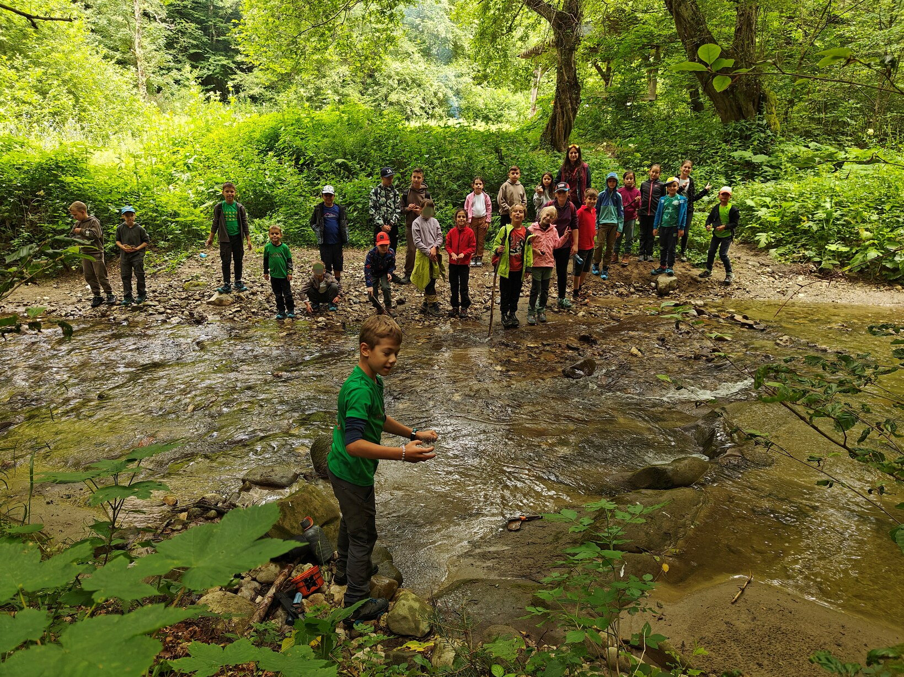
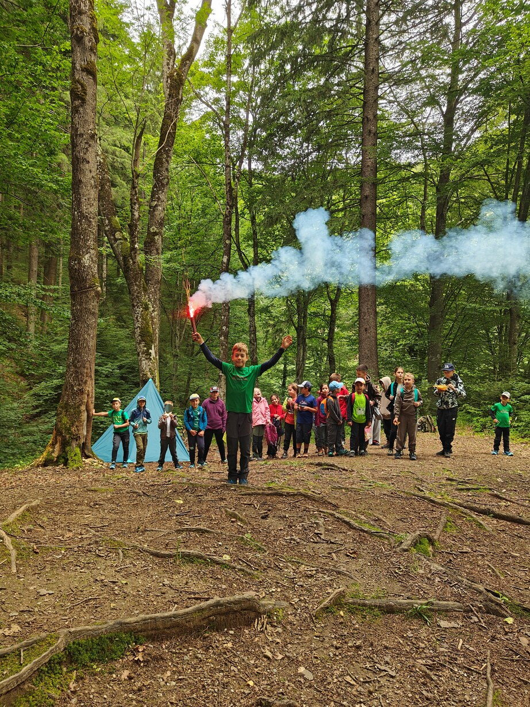
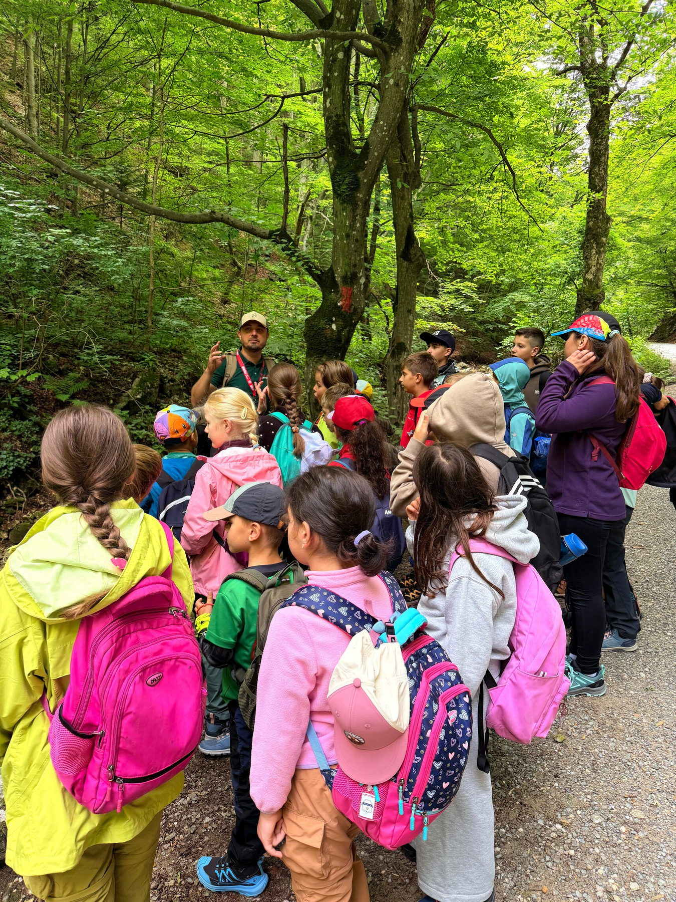
Copiii intră într-o misiune în care fiecare membru al echipei are un rol. Învață să observe situația, să protejeze, să ceară ajutor și să acționeze împreună.
SECURIZEAZĂ → EVALUEAZĂ → CERE AJUTOR → ACȚIONEAZĂ → EVACUEAZĂ
Un salvator nu este cel care face totul singur. Este cel care știe să ceară și să ofere ajutor.
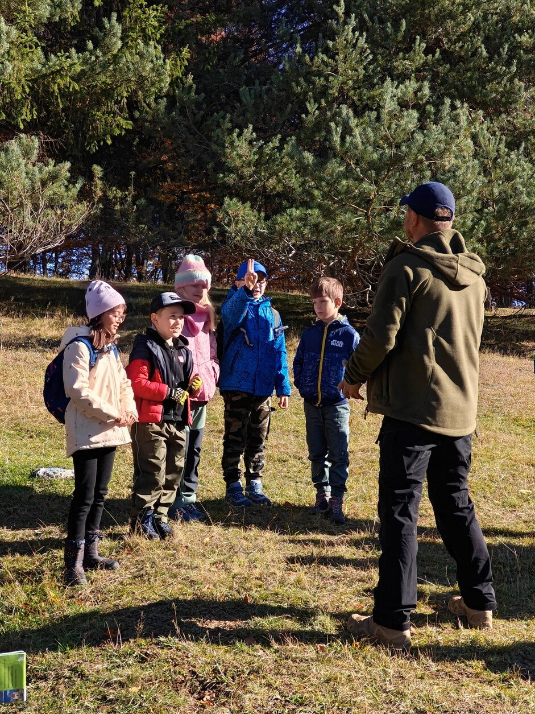

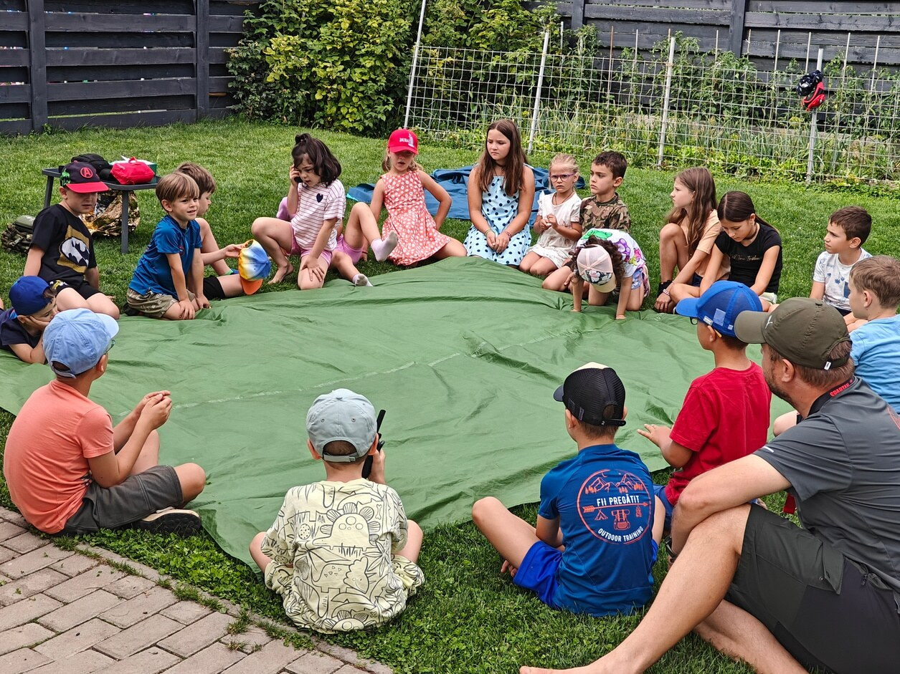
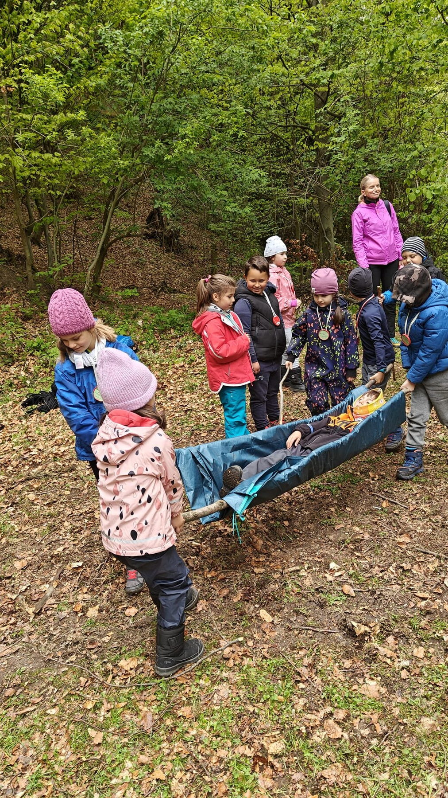

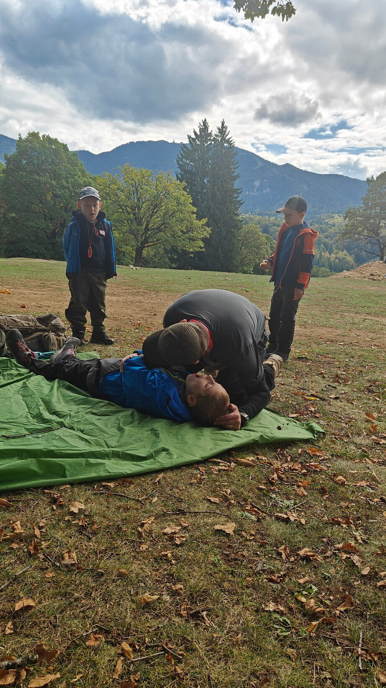
Copiii intră într-o aventură în care trebuie să se orienteze, să comunice, să rezolve probleme și să lucreze împreună. Nu există un „cel mai bun” copil. Există o echipă care trebuie să ajungă împreună la final.
„Dacă vrei să ajungi repede, mergi singur. Dacă vrei să ajungi departe, mergeți împreună.”
Fără competiție: aici nu contează cine ajunge primul la Fagii Bărboși, ci echipa care ajunge împreună. Pentru că unele lucruri pot fi realizate individual. Dar cele mai importante pot fi construite împreună.
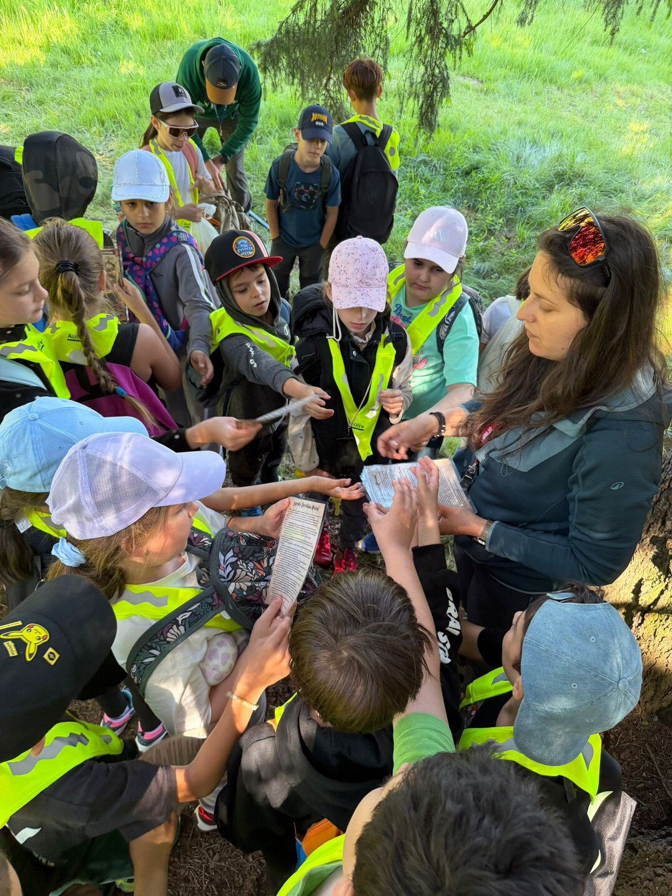

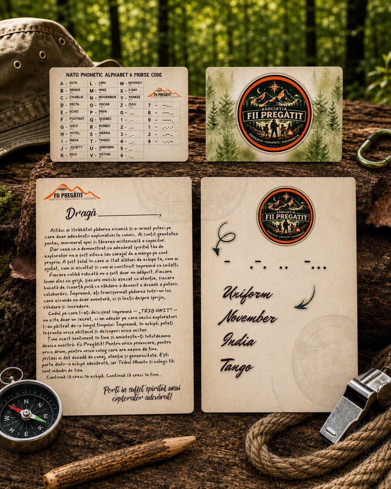
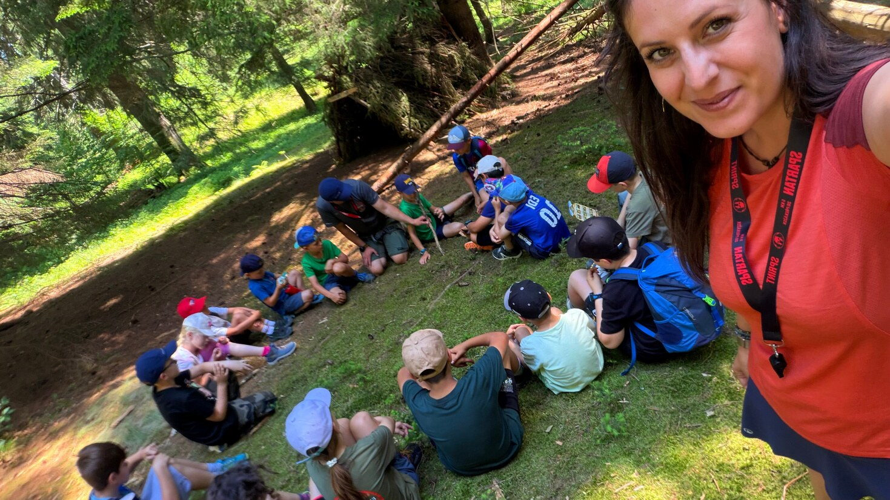
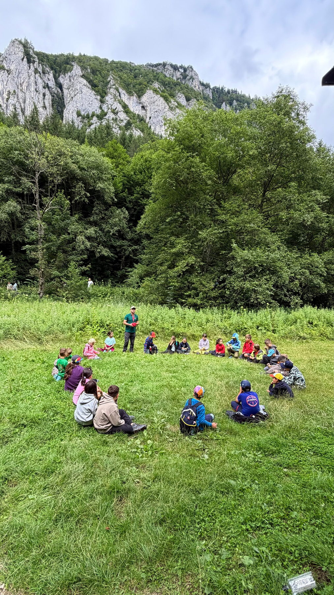
Potrivită atunci când vremea nu permite ieșirea în natură sau când școala preferă o experiență la interior. Prin prezentare interactivă, poveste, imagini, discuții, jocuri de rol și demonstrații practice cu echipament, copiii descoperă cum pot reacționa mai bine atunci când apare neprevăzutul.
Ce descoperă copiii? Când apare frica, primul pas nu este să reacționezi — este să te oprești și să observi. Copiii exersează metoda S.T.O.P., recunoașterea situațiilor de risc, luarea deciziilor, orientare și semnalizare, prim ajutor de bază și comunicarea atunci când au nevoie de ajutor.
Discutăm despre tipurile de riscuri din natură — fenomene meteo, apă, pădure și munte — și despre măsurile de siguranță potrivite fiecăreia. Trecem și prin echipamentul necesar, adaptat vremii: ce purtăm, ce ducem în rucsac și de ce contează fiecare obiect din trusa de supraviețuire.
Nu îi învățăm pe copii să se aventureze singuri. Îi învățăm să observe, să gândească și să ceară ajutor la timp.
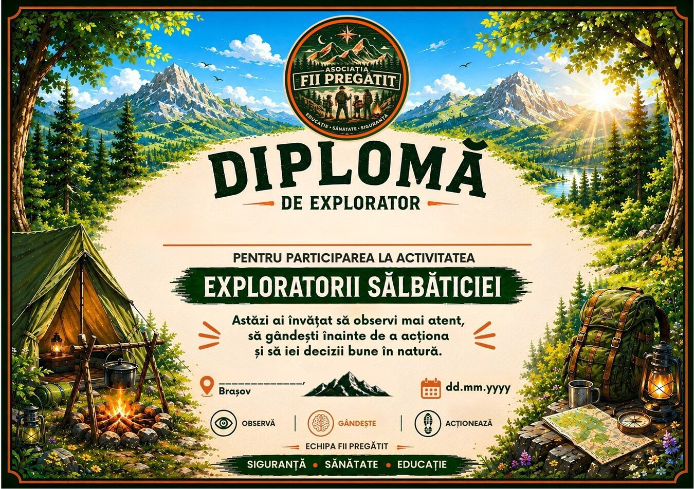


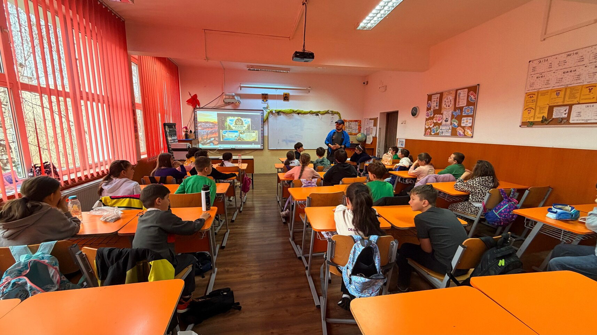
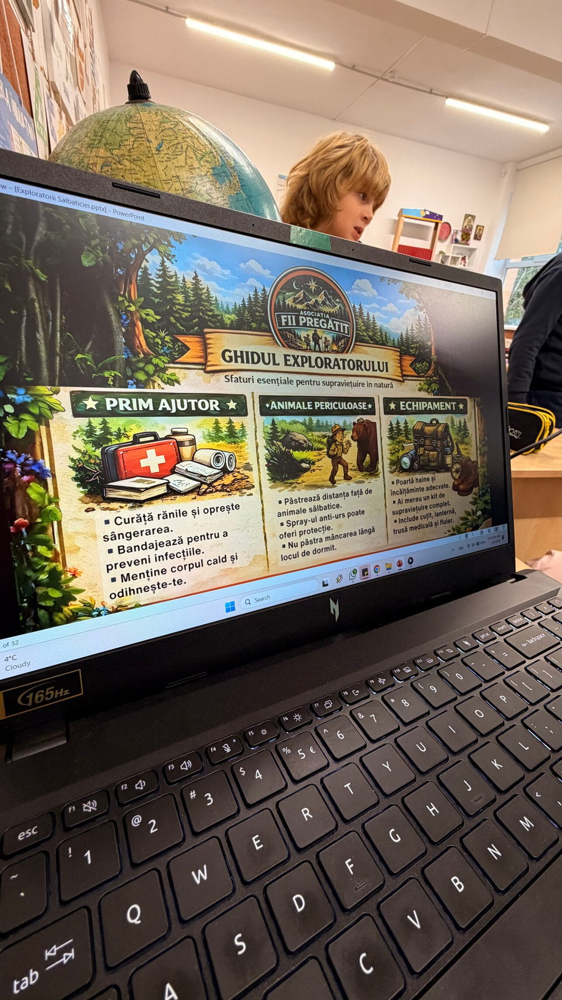
„Un explorator adevărat nu este cel care ajunge primul, ci cel care își păstrează calmul, are grijă de ceilalți și nu lasă pe nimeni în urmă.”
Nu le spunem copiilor doar ce să facă. Îi punem în situația de a descoperi.
Cu locul, cu grupul și cu noi înșine. Copilul intră în ritmul activității și devine atent la ce se întâmplă în jur.
Copilul nu primește doar explicații. Observă, explorează, testează, se mișcă și interacționează cu situații reale.
Copilul primește o provocare potrivită vârstei.
Copilul pune în practică ce a descoperit: construiește, colaborează, găsește o soluție concretă la provocarea primită — cu mâinile, nu doar cu gândul.
Ne oprim și discutăm: ce ai observat, ce ai simțit, ce ai încercat, ce a funcționat, ce ai face diferit?
Întrebarea finală devine: „Unde te-ar putea ajuta asta și în viața de zi cu zi?”
Autonomie · Adaptabilitate · Autoreglare · Responsabilitate · Rezolvarea problemelor · Comunicare · Colaborare
Experiența devine învățare atunci când copilul înțelege ce a trăit și poate duce mai departe ceea ce a descoperit.
În natură, copilul nu poate controla totul. Vremea se schimbă. Traseul trebuie urmărit. O soluție poate să nu funcționeze. Un coleg poate avea nevoie de ajutor. Un reper poate fi greu de identificat.
Exact aceste situații creează contexte autentice pentru învățare.
Copilul nu doar discută despre adaptabilitate. Trebuie să se adapteze.
Nu doar discută despre colaborare. Trebuie să colaboreze.
Nu doar discută despre responsabilitate. Trebuie să ia o decizie și să îi observe consecințele.
Îi provocăm pe copii să iasă din zona de confort. Nu îi punem în situații care depășesc capacitatea lor de gestionare.
Poate rămâne un copil care, data viitoare când se sperie, se oprește.
Un copil care își amintește să observe înainte să reacționeze.
Un copil care își ajută colegul.
Un copil care spune: „Hai să încercăm altfel.”
Un copil care înțelege că a cere ajutor nu este un semn de slăbiciune.
Un copil care descoperă: „Pot.”
O etapă importantă de dezvoltare — Între aproximativ 6 și 11–12 ani, copiii își consolidează abilitățile motorii, învață să își regleze mai bine emoțiile și își dezvoltă autonomia, cooperarea și capacitatea de a funcționa într-un grup. Experiențele practice și activitățile outdoor structurate pot susține aceste procese.
Deschidere pentru explorare și cooperare — În această etapă, copiii sunt foarte receptivi la învățarea prin experiență și la activitățile de grup. Este o perioadă potrivită pentru a exersa cooperarea, responsabilitatea și încrederea în sine, înainte ca preocupările legate de comparația socială, statutul în grup și imaginea personală să se intensifice odată cu preadolescența.
Cel puțin doi instructori la fiecare activitate — copiii rămân permanent în raza noastră vizuală.
Traseele și locațiile sunt verificate în prealabil.
Activitățile și provocările sunt adaptate vârstei și ritmului grupului.
Fără competiție: exersăm calmul, curajul, cooperarea și autonomia.
Înțelegem perfect această grijă — suntem părinți și ne-am pus aceeași întrebare înainte de primele ieșiri. Laurențiu este cadru M.A.I. la Serviciul pentru Acțiuni Speciale, iar pregătirea pentru situații neprevăzute este meseria lui. La fiecare ieșire avem spray-uri speciale la îndemână, mergem mereu în grup — zgomotul grupului ține animalele la distanță în mod natural — și alegem trasee pe care le cunoaștem foarte bine.
Ieșim aproape în fiecare weekend de patru ani. În tot acest timp am zărit de patru ori un urs, de fiecare dată la mare distanță, fără niciun incident. Copiii învață, pas cu pas, cum să își păstreze calmul și cum să reacționeze corect dacă întâlnesc un animal sălbatic.
Alegeți activitatea, locația și perioada dorită și transmiteți-ne opțiunile pentru a verifica disponibilitatea și a confirma programarea. Activitățile 1 și 2 se desfășoară în Poiana Mică, la Pietrele lui Solomon sau în Cheile Râșnoavei, Activitatea 3 în Poiana Mică, iar Activitatea 4 în sala de clasă.
Activitatea este susținută de doi instructori și durează aproximativ 3 ore. La final, fiecare copil primește materialele specifice activității alese, ca amintire și pentru continuarea experienței acasă.
Ne întâlnim direct la locația aleasă, în funcție de activitate. Ora se stabilește de comun acord. Orientativ, activitățile încep între 8:30 și 9:00 la clasă și între 10:30 și 11:00 în natură.
Asociația nu oferă transport. Poiana Mică și Pietrele lui Solomon au acces RATBV.
Dacă vremea nu este favorabilă, desfășurăm Activitatea 4 — varianta de la clasă — ca alternativă.
Ne puteți contacta pe WhatsApp, prin e-mail sau completând formularul de pe pagină.
Transmiteți-ne activitatea aleasă, locația și data sau perioada dorită. Rezervarea este confirmată după verificarea disponibilității.
Unele lucruri trebuie trăite. Spune-ne câți copii sunt în grup și ce perioadă aveți în vedere, iar noi vă ajutăm să alegeți activitatea potrivită.
Scrie-ne pe WhatsApp Scrie-ne pe e-mail